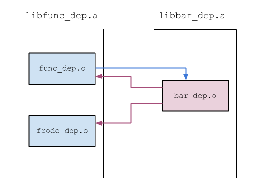

I'll start with a slightly sneaky but educational example. Suppose we have this code:
volatile char src[] = {1, 2, 3, 4, 5};
volatile char dst[50] = {0};
void* memcpy(void* dst, void* src, int len);
int main(int argc, const char* argv[])
{
memcpy(dst, src, sizeof(src));
return dst[4];
}
It runs just fine and the return value is 5. Now, suppose this is part of a larger project that consists of many object files and libraries, and somewhere within the project there's a library that contains this code:
void memcpy(char* aa, char* bb, char* cc) {
int i;
for (i = 0; i < 100; ++i) {
cc[i] = aa[i] + bb[i];
}
}
If the previous snippet gets linked with this library, what happens? Would you expect it to still return 5? Return something else? Crash? The answer is: it depends - the result can be either correct or a segmentation fault. It depends on the order in which the objects and libraries in the project were fed to the linker.
If you fully understand why this depends on linking order, as well as how to avoid the problem (and more serious problems, like circular dependencies) then congratulate yourself and move on - this article is probably not for you. Otherwise, read on.
The basics
Let's start by defining the scope of this article: first, my examples are demonstrating the use of the gcc and binutils toolchain on Linux. Compatible toolchains (like clang instead of gcc) apply too. Second, the discussion here resolves around static linking that's done at compile/link time.
To understand why linking order matters, it's first instructional to understand how the linker works with respect to linking libraries and objects together. Just as a quick reminder - an object file both provides (exports) external symbols to other objects and libraries, and expects (imports) symbols from other objects and libraries. For example, in this C code:
int imported(int);
static int internal(int x) {
return x * 2;
}
int exported(int x) {
return imported(x) * internal(x);
}
The names of the functions speak for themselves. Let's compile it and look at the symbol table:
$ gcc -c x.c
$ nm x.o
000000000000000e T exported
U imported
0000000000000000 t internal
This means: exported is an external symbol - defined in the object file and visible from the outside. imported is an undefined symbol; in other words, the linker is expected to find it elsewhere. When we talk about linking later, the term undefined can become confusing - so it helps to remember that this is where it comes from originally. internal is defined within the object but invisible from the outside.
Now, a library is simply a collection of object files. Just a bunch of object files glued together. Creating a library is a very trivial operation that doesn't do anything special besides placing many object files into the same file. This in itself is important, because a horde of object files is not convenient to deal with. For example, on my system libc.a (the static version of the C library) consists of almost 1500 object files. It's way nicer to just carry libc.a around.
The linking process
This section defines the linking process in a somewhat dry, algorithmic manner. This process is the key to understanding why linking order matters.
Consider a linker invocation:
$ gcc main.o -L/some/lib/dir -lfoo -lbar -lbaz
The linker is almost always invoked through the compiler driver gcc when compiling C or C++ code. This is because the driver knows how to provide the correct command-line arguments to the linker itself (ld) with all the support libraries, etc. We'll see more of this later.
Anyhow, as you can see the object files and libraries are provided in a certain order on the command-line, from left to right. This is the linking order. Here's what the linker does:
- The linker maintains a symbol table. This symbol table does a bunch of things, but among them is keeping two lists:
- A list of symbols exported by all the objects and libraries encountered so far.
- A list of undefined symbols that the encountered objects and libraries requested to import and were not found yet.
- When the linker encounters a new object file, it looks at:
- The symbols it exports: these are added to the list of exported symbols mentioned above. If any symbol is in the undefined list, it's removed from there because it has now been found. If any symbol has already been in the exported list, we get a "multiple definition" error: two different objects export the same symbol and the linker is confused.
- The symbols it imports: these are added to the list of undefined symbols, unless they can be found in the list of exported symbols.
- When the linker encounters a new library, things are a bit more interesting. The linker goes over all the objects in the library. For each one, it first looks at the symbols it exports.
- If any of the symbols it exports are on the undefined list, the object is added to the link and the next step is executed. Otherwise, the next step is skipped.
- If the object has been added to the link, it's treated as described above - its undefined and exported symbols get added to the symbol table.
- Finally, if any of the objects in the library has been included in the link, the library is rescanned again - it's possible that symbols imported by the included object can be found in other objects within the same library.
When the linker finishes, it looks at the symbol table. If any symbols remain in the undefined list, the linker will throw an "undefined reference" error. For example, when you create an executable and forget to include the file with the main function, you'll get something like:
/usr/lib/x86_64-linux-gnu/crt1.o: In function '_start':
(.text+0x20): undefined reference to 'main'
collect2: ld returned 1 exit status
Note that after the linker has looked at a library, it won't look at it again. Even if it exports symbols that may be needed by some later library. The only time where a linker goes back to rescan objects it has already seen happens within a single library - as mentioned above, once an object from some library is taken into the link, all other objects in the same library will be rescanned. Flags passed to the linker can tweak this process - again, we'll see some examples later.
Also note that when a library is examined, an object file within it can be left out of the link if it does not provide symbols that the symbol table needs. This is a very important feature of static linking. The C library I mentioned before makes a heavy use of this feature, by mostly splitting itself to an-object-per-function. So, for example if the only C standard library function your code uses is strlen, only strlen.o will be taken into the link from libc.a - and your executable will be very small.
Simple examples
The previous section can be hard to digest, so here are some simple examples that show the process in action.
Let's start with the most basic case, of linking two objects together:
$ cat simplefunc.c
int func(int i) {
return i + 21;
}
$ cat simplemain.c
int func(int);
int main(int argc, const char* argv[])
{
return func(argc);
}
$ gcc -c simplefunc.c
$ gcc -c simplemain.c
$ gcc simplefunc.o simplemain.o
$ ./a.out ; echo $?
22
Everything links and works as expected. Note that since these are object files, the linking order does not matter. Object files are always taken into the link. We can pass them to the linker in reversed order and it still works:
$ gcc simplemain.o simplefunc.o
$ ./a.out ; echo $?
22
Now let's do something different. Let's put simplefunc.c into a library:
$ ar r libsimplefunc.a simplefunc.o
$ ranlib libsimplefunc.a
$ gcc simplemain.o -L. -lsimplefunc
$ ./a.out ; echo $?
22
Works like a charm. But note what happens if the linking order is reversed now:
$ gcc -L. -lsimplefunc simplemain.o
simplemain.o: In function 'main':
simplemain.c:(.text+0x15): undefined reference to 'func'
collect2: ld returned 1 exit status
Understanding the linking algorithm outlined above makes this case simple to explain. When the linker encounters libsimplefunc.a, it still hasn't seen simplemain.o, which means that func is not yet on the undefined list. When the linker looks into the library it sees simplefunc.o that exports func. But since it doesn't need func, this object file is not included in the link. When the linker does reach simplemain.o and sees that func is, indeed required, it's added to the undefined list (because it's not on the exported list). The linker then reaches the end of the link and func is still undefined.
Note how this doesn't happen in the previous linking order - since simplemain.o comes first, func is on the undefined list before the linker sees the library, so the object file exporting it does get included.
This brings us to the most important corollary of the linking process outlined above:
If object or library AA needs a symbol from library BB, then AA should come before library BB in the command-line invocation of the linker.
Circular dependency
The corollary above is an important summary of the linking process - it's certainly much more practical to keep in mind because it's so short. But it makes one wonder - what happens if AA needs a symbol from BB, but BB also needs a symbol from AA? While officially this isn't a good programming practice, in reality it happens quite a lot. But AA can't come both before and after BB on the command-line, right? That's just silly. Wait, is it, really?
Let's see an example and start simple. Imagine that instead of simplefunc.c, the func symbol is provided thus:
$ cat func_dep.c
int bar(int);
int func(int i) {
return bar(i + 1);
}
$ cat bar_dep.c
int func(int);
int bar(int i) {
if (i > 3)
return i;
else
return func(i);
}
These two files depend on each other and get placed into different libraries. If we link them in one order, we fail:
$ gcc simplemain.o -L. -lbar_dep -lfunc_dep
./libfunc_dep.a(func_dep.o): In function 'func':
func_dep.c:(.text+0x14): undefined reference to 'bar'
collect2: ld returned 1 exit status
However, the other order does work:
$ gcc simplemain.o -L. -lfunc_dep -lbar_dep
$ ./a.out ; echo $?
4
Quiz: can you figure out why? Hint: just go over the linking process algorithm with this command-line. What undefined symbols does the symbol table contain when the linker first sees -lfunc_dep?
But this is a very simple case. Let's look at a trickier one. We'll add a dependency to bar on another function from libfunc_dep.a, but one that lives in a different object:
$ cat bar_dep.c
int func(int);
int frodo(int);
int bar(int i) {
if (i > 3)
return frodo(i);
else
return func(i);
}
$ cat frodo_dep.c
int frodo(int i) {
return 6 * i;
}
We'll recompile all these files into separate objects, and the libfunc_dep.a library will now be:
$ ar r libfunc_dep.a func_dep.o frodo_dep.o
$ ranlib libfunc_dep.a
Here's a drawing of the libraries, with arrows showing the dependencies:
Now linking fails no matter what order we list the libraries in:
$ gcc -L. simplemain.o -lfunc_dep -lbar_dep
./libbar_dep.a(bar_dep.o): In function 'bar':
bar_dep.c:(.text+0x17): undefined reference to 'frodo'
collect2: ld returned 1 exit status
$ gcc -L. simplemain.o -lbar_dep -lfunc_dep
./libfunc_dep.a(func_dep.o): In function 'func':
func_dep.c:(.text+0x14): undefined reference to 'bar'
collect2: ld returned 1 exit status
To solve this, consider that it's perfectly valid to list a library more than once on the link line; so in fact, we can provide libfunc_dep.a both before and after libbar_dep.a:
$ gcc -L. simplemain.o -lfunc_dep -lbar_dep -lfunc_dep
$ ./a.out ; echo $?
24
Another quiz: will the same trick work providing -lbar_dep twice? Why not?
Using linker flags to control the process
As I've mentioned above, the linker has a number of interesting flags that can be used to control the process in a fine-grained manner. For example, circular dependency problems can be easily resolved with --start-group and --end-group. Here's an instructive portion from man ld:
--start-group archives --end-group
The specified archives are searched repeatedly until no new undefined references are created. Normally, an archive is searched only once in the order that it is specified on the command line. If a symbol in that archive is needed to resolve an undefined symbol referred to by an object in an archive that appears later on the command line, the linker would not be able to resolve that reference. By grouping the archives, they all be searched repeatedly until all possible references are resolved.
Using this option has a significant performance cost. It is best to use it only when there are unavoidable circular references between two or more archives.
Here's how this helps in our case:
$ gcc simplemain.o -L. -Wl,--start-group -lbar_dep -lfunc_dep -Wl,--end-group
$ ./a.out ; echo $?
24
It's interesting to note the "significant performance cost" warning in the excerpt above. This explains why the linking process is the way it is. Presumably, linkers could just re-scan the whole library list until no new symbols got resolved. This would eliminate most circular-dependency and linking order problems in the world, but it would also be slow. Linking is already a critical part of the compilation time of large systems, since it looks at the whole program and requires quite a bit of memory. It's better to make it as fast as possible for well-behaved programs (that got their linking order right), and provide special options like groups for the difficult circular dependency cases.
There's at least one another linker flag that can help us resolve the circular dependency here. We can use the --undefined flag to tell the linker - "buddy, here's a symbol I want you to add to the undefined list". In our case this makes the link error go away even though the libraries are specified only once:
$ gcc simplemain.o -L. -Wl,--undefined=bar -lbar_dep -lfunc_dep
$ ./a.out ; echo $?
24
Figuring out why this works is left as an exercise to the reader.
Back to the original example
Let's go back to the example this article started with. main assumes it gets the correct memcpy from the C library, but the memcpy it gets linked with does something else. Assuming the memcpy here was packed into the libstray_memcpy.a library:
$ gcc -L. main_using_memcpy.o -lstray_memcpy
$ ./a.out
Segmentation fault (core dumped)
This is the expected behavior. Since -lstray_memcpy was provided after main_using_memcpy.o on the command-line, it gets linked in. But what happens if the order is reversed:
$ gcc -L. -lstray_memcpy main_using_memcpy.o
$ ./a.out ; echo $?
5
The program links and works correctly. The reason for this is simple: even without us explicitly asking for it, gcc asks the linker to link the C library as well. The full linker invocation command of gcc is pretty complex, and can be examined by passing the -### flag to gcc. But in our case this amounts to:
$ gcc -L. -lstray_memcpy main_using_memcpy.o -lc
When the linker sees -lstray_memcpy, the symbol table does not yet have an undefined entry for memcpy, so the object file with the wrong function does not get linked. The linker adds this undefined entry only after it sees main_using_memcpy.o. Then, when it reaches -lc, the object file holding memcpy from the C library does get linked in because by now memcpy is on the undefined list.
Conclusion
The algorithm used by the linker to resolve symbols between objects and libraries is pretty simple. As long as you keep it in mind, linker errors and related problems should be easy to understand. If you still run into problematic situations you're not sure how to resolve, this article mentioned two tools that can be very useful in debugging such problems: one is nm, which shows the symbol table of an object or a whole library. The other is the -### flag that gcc accepts and as a result shows the full commands it passes to the underlying tools.